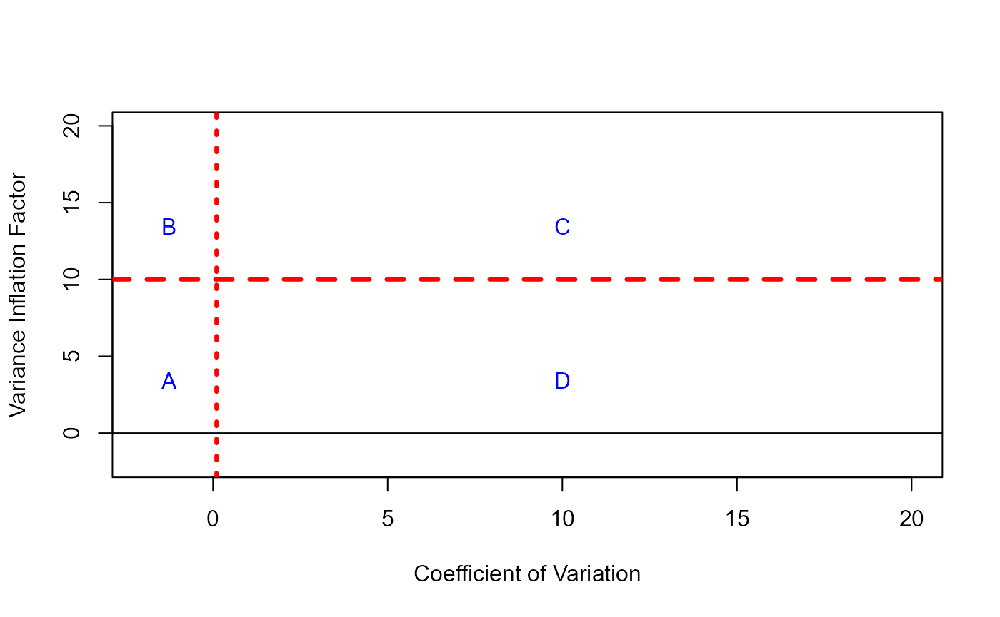
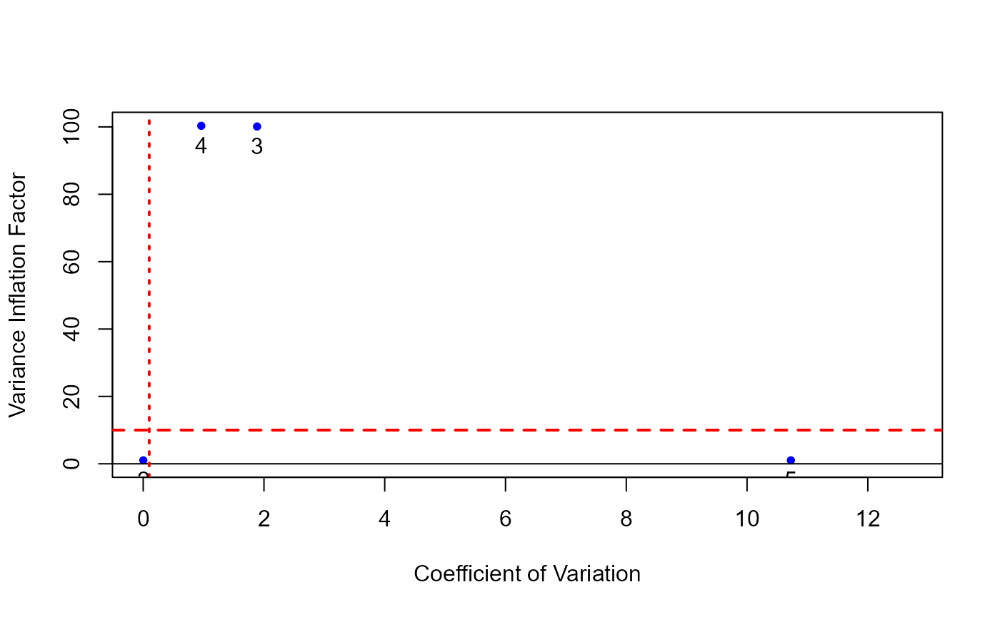

Introduction
The following is a presentation of the rvif package that aims to facilitate its use. To this end, the document is divided into four sections, each of them dedicated to each of the functions that make up the package.
This package is focused on determining whether or not the degree of approximate multicollinearity in a multiple linear regression model is of concern, meaning that it affects the statistical analysis (i.e. individual significance tests) of the model.
Please note that the results presented here are based on the articles by Salmerón, GarcÃa and GarcÃa (2025) and Salmerón, GarcÃa and GarcÃa (working paper), see bibliography at the end of the document.
We start by loading the rvif library, which in turn loads the multiColl package.
cv_vif function
Given the multiple linear regression model where the design matrix contains the observations of each independent variable in columns, the function cv_vif calculates the Coefficients of Variation (CV) and Variance Inflation Factors (VIF) of each variable (column) contained in .
The command and arguments of this function are as follows:
# cv_vif(x, tol = 1e-30)Both CVs and VIFs are calculated using existing functions in the multiColl package. Since these functions require the intercept of the model to be in the first column of , the design function matrix has to be entered as the first argument of the cv_vif function so that the intercept is in the first column.
This issue is crucial for ensuring the function works correctly.
A first example: how to use the function
To illustrate this issue and how this function works, we will first use the Wissel data available in the rvif package. For more details use help(Wissel).
head(Wissel, n=5)
#> t D cte C I CP
#> 1 1996 3.8051 1 4.7703 4.8786 808.23
#> 2 1997 3.9458 1 4.7784 5.0510 798.03
#> 3 1998 4.0579 1 4.9348 5.3620 806.12
#> 4 1999 4.1913 1 5.0998 5.5585 865.65
#> 5 2000 4.3585 1 5.2907 5.8425 997.30As can be seen, the design matrix in this case is formed by the last four columns. To calculate the CVs and VIFs of each independent variable, the following code must be executed:
x = Wissel[,-c(1,2)]
cv_vif(x)
#> CV VIF
#> Variable 2 0.1718940 589.7540
#> Variable 3 0.2482804 281.8862
#> Variable 4 0.3607848 189.4874An alternative approach is to obtain the design matrix of the independent variables after specifying the corresponding model using the lm command and the model.matrix function:
attach(Wissel)
reg_W = lm(D~C+I+CP)
detach(Wissel)
x = model.matrix(reg_W)
cv_vif(x)
#> CV VIF
#> Variable 2 0.1718940 589.7540
#> Variable 3 0.2482804 281.8862
#> Variable 4 0.3607848 189.4874As can be seen, the same results are obtained in both cases.
According to Salmerón, RodrÃguez and GarcÃa (2020), the Coefficient of Variation (CV) is useful for detecting non-essential multicollinearity (the relationship between the intercept and at least one of the remaining independent variables in a linear model). They state specifically that if the CV of an independent variable is less than 0.1002506, then it is related to the intercept and needs to be centered to eliminate this relationship.
As can be seen from the Wissel data, the degree of non-essential multicollinearity is not strong.
On the other hand, according to Salmerón, GarcÃa and GarcÃa (2018), the VIF is only able to detect multicollinearity of the essential type (linear relationship between at least two independent variables of the linear model excluding the intercept). As VIF values suggest the presence of this type of multicollinearity, the results clearly indicate that it exists in the Wissel data model.
A second example: construction of the design matrix
Since the concept of multicollinearity only affects the independent variables of the model, it is possible to detect multicollinearity without considering the dependent variable.
When constructing the design matrix directly, it is important to note that the first column must correspond to the intercept, as previously mentioned.
The following simulation illustrates the situation:
set.seed(2025)
obs = 100
cte = rep(1, obs)
x2 = rnorm(obs, 5, 0.01) # variable with very little variability
x3 = rnorm(obs, 5, 10)
x4 = x3 + rnorm(obs, 5, 1) # fourth variable related to the third
x5 = rnorm(obs, -1, 30)
x = cbind(cte, x2, x3, x4, x5) # the first column has to be the intercept
cv_vif(x)
#> CV VIF
#> Variable 2 0.002030169 1.025399
#> Variable 3 1.886093419 100.123352
#> Variable 4 0.961634537 100.320601
#> Variable 5 10.725968638 1.025810In this case, it is observed that the second variable causes non-essential multicollinearity, whereas the relation between the second and third variables cause essential multicollinearity (this is how the simulated data has been designed).
A third example: checking some errors
In what follows, we will use the data on soil characteristics as predictors of forest diversity from Bondell and Reich’s paper. This data set is available in the rvif package. For more details, use help(soil).
This data set contains a variable called Sum Cations which is the sum of the concentrations of calcium (Ca), magnesium (Mg), potassium (K) and sodium (Na). For this reason, the VIF calculation produces errors in this case.
head(soil, n=5)
#> BaseSat SumCation CECbuffer Ca Mg K Na P Cu Zn
#> 1 2.34 0.1576 0.614 0.0892 0.0328 0.0256 0.010 0.000 0.080 0.184
#> 2 1.64 0.0970 0.516 0.0454 0.0218 0.0198 0.010 0.000 0.064 0.112
#> 3 5.20 0.4520 0.828 0.3306 0.0758 0.0336 0.012 0.240 0.136 0.350
#> 4 4.10 0.3054 0.698 0.2118 0.0536 0.0260 0.014 0.030 0.126 0.364
#> 5 2.70 0.2476 0.858 0.1568 0.0444 0.0304 0.016 0.384 0.078 0.376
#> Mn HumicMatter Density pH ExchAc Diversity
#> 1 3.200 0.1220 0.0822 0.516 0.466 0.2765957
#> 2 2.734 0.0952 0.0850 0.512 0.430 0.2613982
#> 3 4.148 0.1822 0.0746 0.554 0.388 0.2553191
#> 4 3.728 0.1646 0.0756 0.546 0.408 0.2401216
#> 5 4.756 0.2472 0.0692 0.450 0.624 0.1884498
x = soil[,-16]
cv_vif(x)
#> System is computationally singular. Modify the design matrix before running the code.The second argument of this function sets the threshold used to determine whether the system is computationally singular. Eliminating the second variable allows the results to be obtained without any problem.
x = soil[,-c(2,16)]
cv_vif(x)
#> CV VIF
#> Variable 2 0.26254488 65655.631992
#> Variable 3 0.93022708 49093.141906
#> Variable 4 0.56511827 2096.203209
#> Variable 5 0.24604041 78.315177
#> Variable 6 0.23242890 7.017204
#> Variable 7 1.41496855 5.451706
#> Variable 8 0.37215759 10.065882
#> Variable 9 0.42380972 8.879019
#> Variable 10 0.25216470 3.132565
#> Variable 11 0.28426257 31.738328
#> Variable 12 0.07203395 23.370488
#> Variable 13 0.06026917 22.221129
#> Variable 14 0.14073646 7609.600200It is now observed that the design matrix has 14 variables, but the output only provides information on 13 of these (from 2 to 14). This is because the code is designed to eliminate the first column of the design matrix (which corresponds to the intercept). In this case, the design matrix entered does not have an intercept in its first column. This has resulted in the elimination of the first variable.
This can be resolved either by entering the constant manually into the design matrix, or by obtaining it from the specification of the linear regression model.
y = soil[,16]
reg_S = lm(y~as.matrix(x))
cv_vif(model.matrix(reg_S))
#> CV VIF
#> Variable 2 0.52570466 196.097486
#> Variable 3 0.26254488 87577.945861
#> Variable 4 0.93022708 63996.254093
#> Variable 5 0.56511827 2478.282664
#> Variable 6 0.24604041 92.107236
#> Variable 7 0.23242890 8.320798
#> Variable 8 1.41496855 6.807994
#> Variable 9 0.37215759 11.966375
#> Variable 10 0.42380972 9.795579
#> Variable 11 0.25216470 3.476432
#> Variable 12 0.28426257 34.800524
#> Variable 13 0.07203395 26.743959
#> Variable 14 0.06026917 27.459519
#> Variable 15 0.14073646 10412.458323It can be seen that variables 13 (pH) and 14 (ExchAc) are causing non-essential multicollinearity, while all the other variables, except for 7 (Na), 8 (P), 10 (Zn) and 11 (Mn), are causing essential multicollinearity.
If the design matrix is constructed directly but the intercept is not positioned in the first column of the design matrix , the following error message occurs:
A fourth example: the special case of the simple linear regression model
In the special case of the simple linear regression model, the design matrix consists of an intercept and a second variable.
In this case, it makes no sense to calculate the VIF since it is always equal to 1 regardless of the observed values of the second variable (see Salmerón, RodrÃguez and GarcÃa (2020) for more details).
For this reason, to execute the cv_vif function, the design matrix (the first argument of the function) must have more than two columns:
Final warning regarding the presence of binary variables in the model
The code is not designed to distinguish between quantitative and binary independent variables, so users should be especially careful when interpreting results involving binary variables. Note that the VIF for a binary variable is calculated using the coefficient of determination from a regression in which the binary variable is treated as the dependent variable. However, the coefficient of determination is generally considered inappropriate in such cases, which is why models such as logit or probit are typically recommended for binary outcomes.
The following example illustrates this:
set.seed(2025)
x3 = rbinom(obs, 1, 0.5)
x = cbind(cte, x2, x3)
head(x, n=5)
#> cte x2 x3
#> [1,] 1 5.483027 1
#> [2,] 1 3.142566 0
#> [3,] 1 6.092618 1
#> [4,] 1 8.089956 0
#> [5,] 1 4.483902 1
cv_vif(x)
#> CV VIF
#> Variable 2 1.3630182 1.066598
#> Variable 3 0.9416966 1.066598All calculations involving a binary variable in the design matrix, X, are performed without any problem. However, we would like to point out to the reader that the associated VIF should not be interpreted as a quantitative variable. We recommend ignoring it.
cv_vif_plot function
The cv_vif_plot function is intended to facilitate the interpretation of the results provided by the cv_vif function. For this reason, the input of this function (first argument) is the output from the cv_vif function. Consequently, it represents the scatter plot of the Coefficient of Variation (CV) and the Variance Inflation Factor (VIF) for the independent variables (excluding the intercept) of a multiple linear regression model.
The command and arguments of this function are as follows:
# cv_vif_plot(x, limit = 40)It should be noted that the distinction between essential and non-essential multicollinearity and the limitations of each measure (CV and VIF) for detecting the different kinds of multicollinearity, can be very useful to detect if there is a troubling degree of multicollinearity, what kind of multicollinearity it is and what variables are causing it. For this purpose, it is important to include in the representation of the scatter plot of the CV and VIF the lines corresponding to the established thresholds for each measure: dashed vertical line for 0.1002506 (CV) and dotted horizontal line for 10 (VIF).
These lines determine four regions (see the following graphical representation) which can be interpreted as follows: A: existence of troubling non-essential and non-troubling essential multicollinearity; B: existence of troubling essential and non-essential multicollinearity; C: existence of non-troubling non-essential and troubling essential multicollinearity; D: non-troubling degree of existing multicollinearity (essential and non-essential).
plot(-2:20, -2:20, type = "n", xlab="Coefficient of Variation", ylab="Variance Inflation Factor")
abline(h=10, col="red", lwd=3, lty=2)
abline(h=0, col="black", lwd=1)
abline(v=0.1002506, col="red", lwd=3, lty=3)
text(-1.25, 2, "A", pos=3, col="blue")
text(-1.25, 12, "B", pos=3, col="blue")
text(10, 12, "C", pos=3, col="blue")
text(10, 2, "D", pos=3, col="blue")
Some examples
When the cv_vif_plot command is applied to the Wissel data, it is clear that the three independent variables have a CV greater than 0.1002506 (dashed vertical line) and a VIF greater than 10 (dotted horizontal line). Therefore, it can be concluded immediately that the degree of multicollinearity of the non-essential type is not strong, but that of the essential type is.
x = Wissel[,-c(1,2)]
cv_vif_plot(cv_vif(x))When the cv_vif_plot function is applied to the simulation of the second example of the cv_vif function, it can be observed that the second variable causes non-essential multicollinearity while the third and fourth variables cause essential multicollinearity:
set.seed(2025)
obs = 100
cte = rep(1, obs)
x2 = rnorm(obs, 5, 0.01) # variable with very little variability
x3 = rnorm(obs, 5, 10)
x4 = x3 + rnorm(obs, 5, 1) # fourth variable related to the third
x5 = rnorm(obs, -1, 30)
x = cbind(cte, x2, x3, x4, x5) # the first column has to be the intercept
cv_vif_plot(cv_vif(x))
cv_vif_plot(cv_vif(x), limit=0) # note how the 'limit' argument works
rvifs function
In their paper, Salmerón, GarcÃa and GarcÃa (2025) propose a redefinition of the variance inflation factor (VIF) by modifying the reference orthogonal model. The redefined VIF (RVIF) is defined as follows: which shows, among other questions, that the RVIF is defined for (suppose the design matrix has independent variables (columns)). In contrast to the VIF, the RVIF can therefore be calculated for the intercept of the linear regression model.
The following other considerations should be taken into account:
If the data are expressed in unit length, using the same transformation used to calculate the condition number, then:
In this case (data expressed in unit length), when is orthogonal to , it is verified that and, consequently for . That is, the RVIF is always greater than or equal to 1 and its minimum value is indicative of the absence of multicollinearity.
Denoted by , , where can be interpreted as the percentage of approximate multicollinearity due to the variable . Note the similarity of this expression to the VIF expression: .
Finally, Salmerón, GarcÃa and GarcÃa (2025) show, from a simulation for , that if , then the degree of multicollinearity is worrying. In any case, this value should be refined by considering a higher number of independent variables.
In short, while it is not necessary to transform the data, it is advisable to do so for a better interpretation of the results (as with the condition number).
The rvifs function calculates the and values associated with the independent variable .The command and arguments of this function are as follows:
# rvifs(x, ul = TRUE, intercept = TRUE, tol = 1e-30)As can be seen:
The first argument to the function refers to the design matrix .
The novelty here is that the design matrix, , may or may not have an intercept. This is specified by the third argument. If an intercept is present, as in previous cases, it must correspond to the first column of .
The second argument indicates whether the data has been transformed to a unit length (the default value) or whether no transformation has been performed.
The last argument is the threshold that determines whether the system is computationally singular, similar to the cv_vif function.
Some examples
When the rvifs function is applied to the simulation of the second example of the cv_vif function, it can be observed that all the variables (except the last one) have high RVIF values and a high percentage of approximate multicollinearity:
set.seed(2025)
obs = 100
cte = rep(1, obs)
x2 = rnorm(obs, 5, 0.01) # variable with very little variability
x3 = rnorm(obs, 5, 10)
x4 = x3 + rnorm(obs, 5, 1) # fourth variable related to the third
x5 = rnorm(obs, -1, 30)
x = cbind(cte, x2, x3, x4, x5) # the first column has to be the intercept
rvifs(x)
#> RVIF %
#> Intercept 2.495289e+05 99.9996
#> Variable 2 2.487886e+05 99.9996
#> Variable 3 1.282689e+02 99.2204
#> Variable 4 2.088057e+02 99.5211
#> Variable 5 1.034727e+00 3.3561However, when applied to data on soil characteristics, where there is no intercept in the design matrix, high values are observed for all variables:
x = soil[,-16]
rvifs(x, intercept=FALSE)
#> System is computationally singular. Modify the design matrix before running the code.
rvifs(x[,-2], intercept=FALSE)
#> RVIF %
#> Variable 1 9.055351e+02 99.8896
#> Variable 2 1.346429e+06 99.9999
#> Variable 3 1.363495e+05 99.9993
#> Variable 4 1.019537e+04 99.9902
#> Variable 5 1.613634e+03 99.9380
#> Variable 6 1.483139e+02 99.3258
#> Variable 7 1.019762e+01 90.1938
#> Variable 8 9.835658e+01 98.9833
#> Variable 9 6.422169e+01 98.4429
#> Variable 10 5.591258e+01 98.2115
#> Variable 11 4.432249e+02 99.7744
#> Variable 12 4.653218e+03 99.9785
#> Variable 13 5.570325e+03 99.9820
#> Variable 14 5.334982e+05 99.9998Finally, by applying the rvif to the simple linear regression model, we can determine the degree of non-essential multicollinearity:
cte = rep(1, obs)
set.seed(2025)
x2 = rnorm(obs, 3, 4)
x = cbind(cte, x2)
rvifs(x)
#> RVIF %
#> Intercept 1.538266 34.9917
#> Variable 2 1.538266 34.9917A high degree of non-essential multicollinearity is detected if a variable with little variability is generated.
cte = rep(1, obs)
set.seed(2025)
x2 = rnorm(obs, 3, 0.04)
x = cbind(cte, x2)
rvifs(x)
#> RVIF %
#> Intercept 5459.413 99.9817
#> Variable 2 5459.413 99.9817If this variable is centered to solve the detected problem, the RVIFs coincide with their minimum value, indicating orthogonality between the elements of the design matrix:
If the data are not transformed into unit length, the percentages of multicollinearity due to each variable remain equal to zero. However, since there is no universal minimum reference value, interpreting the RVIF becomes more complicated:
rvifs(x, ul=FALSE)
#> RVIF %
#> Intercept 0.010000 0
#> Variable 2 6.065757 0This last example illustrates why it is advisable to transform the data into unit length when calculating the RVIF.
multicollinearity function
Until now, measures of the degree of multicollinearity in multiple linear regression models have been used. However, it has never been proven that this degree affects model analysis.
In their working paper, Salmerón, GarcÃa and GarcÃa propose a statistical test that determines whether the degree of multicollinearity affects the statistical analysis of the model, based on a region of non-rejection (which depends on a level of significance).
More specifically, the test determines whether the non-rejection of the null hypothesis in the individual significance tests of the coefficient associated with each independent variable is due to the degree of multicollinearity.
Ultimately, the decision rule for the test is determined by the following result:
Given the multiple linear regression model , the degree of multicollinearity affects its statistical analysis (with a level of significance of ) if there is a variable , with , that verifies where: and where is the OLS estimate of , its estimated variance, is the OLS estimate of in the orthogonal model, is the variance of the random disturbance, and is the theoretical value associated with the individual significance test.
The multicollinearity function allows you to check the condition of the theorem using the following code:
# multicollinearity(y, x, alpha = 0.05)The first argument of the function refers to the dependent variable of the linear regression model. The second relates to the design matrix containing the independent variables and the third to the significance level considered in the statistical test.
Note that, as with the cv_vif function, the rvif command will only work correctly if the design matrix has the intercept in its first column.
It should also be noted that, in this case, the RVIF is calculated without the data being transformed into unit length, as the results obtained in the working paper by Salmerón, GarcÃa and GarcÃa do not assume any transformation..
A first example: Wissel data
In Wissel’s data on outstanding mortgage debt, the model is considered jointly valid at the same time that is not rejected the null hypothesis that each coefficient of the independent variables is zero:
summary(reg_W)
#>
#> Call:
#> lm(formula = D ~ C + I + CP)
#>
#> Residuals:
#> Min 1Q Median 3Q Max
#> -1.2729 -0.7138 0.2853 0.7033 1.0711
#>
#> Coefficients:
#> Estimate Std. Error t value Pr(>|t|)
#> (Intercept) 5.469264 13.016791 0.420 0.681
#> C -4.252429 5.135058 -0.828 0.423
#> I 3.120395 2.035671 1.533 0.149
#> CP 0.002879 0.005764 0.499 0.626
#>
#> Residual standard error: 0.9325 on 13 degrees of freedom
#> Multiple R-squared: 0.9235, Adjusted R-squared: 0.9058
#> F-statistic: 52.3 on 3 and 13 DF, p-value: 1.629e-07Let us remember that a high degree of essential multicollinearity was determined due to the three independent variables. However, when the multicollinearity command is used, it can be observed that only the second of these is affected by the detected problem:
y = Wissel[,2]
x = Wissel[,3:6]
multicollinearity(y, x)
#> RVIFs c0 c3 Scenario Affects
#> 1 1.948661e+02 7.371069e+00 1.017198e+00 b.1 Yes
#> 2 3.032628e+01 4.456018e+00 9.157898e-01 b.1 Yes
#> 3 4.765888e+00 2.399341e+00 1.053598e+01 b.2 No
#> 4 3.821626e-05 2.042640e-06 7.149977e-04 b.2 NoIn other words, it can be concluded that the failure to reject the null hypothesis in the test associated with the personal consumption (C) variable is due to the degree of multicollinearity in the model.
A second example: Klein and Goldberger data
The multiColl package contains data from Klein and Goldberger on consumption and wage income.
data(KG)
attach(KG)
reg_KG = lm(consumption~wage.income+non.farm.income+farm.income)
detach(KG)
summary(reg_KG)
#>
#> Call:
#> lm(formula = consumption ~ wage.income + non.farm.income + farm.income)
#>
#> Residuals:
#> Min 1Q Median 3Q Max
#> -13.494 -1.847 1.116 2.541 6.460
#>
#> Coefficients:
#> Estimate Std. Error t value Pr(>|t|)
#> (Intercept) 18.7021 6.8454 2.732 0.0211 *
#> wage.income 0.3803 0.3121 1.218 0.2511
#> non.farm.income 1.4186 0.7204 1.969 0.0772 .
#> farm.income 0.5331 1.3998 0.381 0.7113
#> ---
#> Signif. codes: 0 '***' 0.001 '**' 0.01 '*' 0.05 '.' 0.1 ' ' 1
#>
#> Residual standard error: 6.06 on 10 degrees of freedom
#> Multiple R-squared: 0.9187, Adjusted R-squared: 0.8943
#> F-statistic: 37.68 on 3 and 10 DF, p-value: 9.271e-06Once again, at a 5% significance level, the null hypothesis is not rejected in the individual significance tests, while the null hypothesis is rejected in the joint significance test. This situation is considered a sign of strong multicollinearity.
Using the multicollinearity command, it is possible to determine that the statistical analysis of the second variable is affected by the degree of multicollinearity in the model:
head(KG, n=5)
#> consumption wage.income non.farm.income farm.income
#> 1 62.8 43.41 17.10 3.96
#> 2 65.0 46.44 18.65 5.48
#> 3 63.9 44.35 17.09 4.37
#> 4 67.5 47.82 19.28 4.51
#> 5 71.3 51.02 23.24 4.88
y = KG[,1]
x = model.matrix(reg_KG)
multicollinearity(y, x)
#> RVIFs c0 c3 Scenario Affects
#> 1 1.275947615 1.9183829079 0.0021892653 a.1 No
#> 2 0.002652862 0.0007931658 0.0001206694 b.1 Yes
#> 3 0.014130621 0.0110372472 0.0187393601 b.2 No
#> 4 0.053354814 0.0015584988 1.8265885762 b.2 NoA third example: the case of the simple linear regresion
The work of Salmerón, GarcÃa and GarcÃa (2025) illustrates the limitations of the vif command in the car package for detecting the degree of multicollinearity in a simple linear regression model.
The data used in this work for this purpose are available in the rvif package. For more details, use help(SLM1) and help(SLM2).
If the first one is used, the vif command effectively indicates that the model has fewer than two terms and does not perform any calculations:
head(SLM1, n=5)
#> y1 cte V
#> 1 82.392059 1 19.001420
#> 2 -1.942157 1 -1.733458
#> 3 7.474090 1 1.025146
#> 4 -12.303381 1 -4.445014
#> 5 30.378203 1 6.689864
attach(SLM1)
#> The following object is masked _by_ .GlobalEnv:
#>
#> cte
reg_SLM1 = lm(y1~V)
detach(SLM1)
library(car)
vif(reg_SLM1)
#> Error in vif.default(reg_SLM1): model contains fewer than 2 termsIn other words, it denies the possibility that the intercept could form part of the model as another independent variable and, consequently, there could be a problem of multicollinearity.
However, if the multicollinearity command is used, it is possible to determine the degree of multicollinearity in the model and whether it affects the statistical analysis of the model:
y = SLM1[,1]
x = SLM1[,-1]
multicollinearity(y, x)
#> RVIFs c0 c3 Scenario Affects
#> 1 0.0403049717 0.6454323 1.045802e-05 a.1 No
#> 2 0.0002675731 0.8383436 8.540101e-08 a.1 NoWhile the degree of multicollinearity does not affect the statistical analysis of the model in the first data set, it does affect the second:
head(SLM2, n=5)
#> y2 cte Z
#> 1 43.01204 1 9.978211
#> 2 40.04163 1 9.878235
#> 3 40.17086 1 9.924592
#> 4 40.79076 1 10.019123
#> 5 44.72774 1 10.104728
y = SLM2[,1]
x = SLM2[,-1]
multicollinearity(y, x)
#> RVIFs c0 c3 Scenario Affects
#> 1 187.800878 21.4798003 0.03277691 b.1 Yes
#> 2 1.879296 0.3687652 9.57724567 b.2 NoIt can be observed that when the significance level is changed, the values of the non-rejection region (determined by the values and $c_{3}(i)) change:
multicollinearity(y, x, alpha=0.01)
#> RVIFs c0 c3 Scenario Affects
#> 1 187.800878 12.0701590 0.0583291 b.1 Yes
#> 2 1.879296 0.2072205 17.0434643 b.2 NoA fourth example: soil characteristics data
Using the rvif command on the soil characteristics data revealed that all the variables had high RVIF values and a high percentage of multicollinearity.
Meanwhile, using the cv_vif command revealed that the pH and ExchAc variables caused a non-essential multicollinearity problem, while all other variables except Na, P, Zn nad Mn caused essential multicollinearity.
Using the *multicollinearity** command, it is observed that only the statistical analysis of the intercept, CECbuffer and HumicMatter is affected by the degree of multicollinearity present:
y = soil[,16]
x = soil[,-16]
intercept = rep(1, length(y))
x = cbind(intercept, x) # the design matrix has to have the intercept in the first column
multicollinearity(y, x)
#> System is computationally singular. Modify the design matrix before running the code.
multicollinearity(y, x[,-3]) # eliminating the problematic variable (SumCation)
#> RVIFs c0 c3 Scenario Affects
#> 1 4.407184e+02 6.150190e-03 1.480048e+00 b.1 Yes
#> 2 3.828858e+00 1.142356e-02 7.653413e+00 b.2 No
#> 3 1.093791e+05 1.254955e+02 7.236491e+04 b.1 Yes
#> 4 9.883235e+04 3.938383e+01 2.237445e+05 b.2 No
#> 5 1.767758e+05 1.101028e+03 3.609837e+05 b.2 No
#> 6 1.150029e+05 1.627349e+03 1.976176e+05 b.2 No
#> 7 4.627807e+04 5.960870e+02 2.033176e+06 b.2 No
#> 8 1.338591e+01 6.062571e-01 4.060382e+02 b.2 No
#> 9 3.113066e+02 4.089095e+01 5.246698e+05 b.2 No
#> 10 5.177176e+01 6.371216e+00 8.094828e+02 b.2 No
#> 11 1.905089e-01 3.907589e-02 9.787963e-01 b.2 No
#> 12 3.379360e+02 4.534540e+01 2.861964e+02 b.1 Yes
#> 13 4.761238e+04 8.453066e+01 3.828016e+08 b.2 No
#> 14 1.502903e+03 7.901580e+01 9.961215e+03 b.2 No
#> 15 1.066711e+05 2.369347e+02 4.802466e+07 b.2 No
names(x[,-3])
#> [1] "intercept" "BaseSat" "CECbuffer" "Ca" "Mg"
#> [6] "K" "Na" "P" "Cu" "Zn"
#> [11] "Mn" "HumicMatter" "Density" "pH" "ExchAc"Bibliography
Bondell, H.D. and Reich. B.J. (2008). Simultaneous regression shrinkage, variable selection, and supervised clustering of predictors with OSCAR. Biometrics, 64 (1), 115–23, doi: https://doi.org/10.1111/j.1541-0420.2007.00843.x.
Salmerón, R., GarcÃa, C.B. and GarcÃa, J. (2018). Variance Inflation Factor and Condition Number in multiple linear regression. Journal of Statistical Computation and Simulation, 88(12), 2365-2384, doi: https://doi.org/10.1080/00949655.2018.1463376.
Salmerón, R., RodrÃguez, A. and GarcÃa, C.B. (2020). Diagnosis and quantification of the non-essential collinearity. Computational Statistics, 35(2), 647-666, doi: https://doi.org/10.1007/s00180-019-00922-x.
Salmerón, R., GarcÃa, C.B. and GarcÃa, J. (2025). A redefined Variance Inflation Factor: overcoming the limitations of the Variance Inflation Factor. Computational Economics, 65, 337-363, doi: https://doi.org/10.1007/s10614-024-10575-8.
Overcoming the inconsistences of the variance inflation factor: a redefined VIF and a test to detect statistical troubling multicollinearity by Salmerón, R., GarcÃa, C.B and GarcÃa, J. (working paper submitted to The R Journal, https://arxiv.org/pdf/2005.02245).